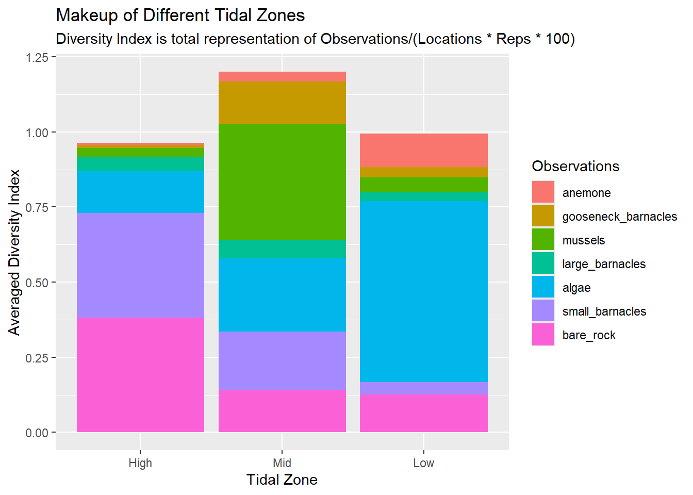

Show code
library(tidyverse)
library(kableExtra)
library(here)
library(forcats)
library(janitor)
library(ggplot2)
library(readr)This code will summarize intertidal data with the main point being to practice factoring.
library(tidyverse)
library(kableExtra)
library(here)
library(forcats)
library(janitor)
library(ggplot2)
library(readr)tide <- read_csv(here("Week_09", "data", "intertidaldata.csv"))
tide_lat <- read_csv(here("Week_09", "data", "intertidaldata_latitude.csv"))
str(tide)spc_tbl_ [450 × 13] (S3: spec_tbl_df/tbl_df/tbl/data.frame)
$ Site : chr [1:450] "Scripps" "Scripps" "Scripps" "Scripps" ...
$ Transect : num [1:450] 1 1 1 2 2 2 3 3 3 4 ...
$ Quadrat : chr [1:450] "Low ." "Mid" "High" "Low" ...
$ Bare Rock : num [1:450] 25 50 20 10 40 40 0 30 60 0 ...
$ Algae : num [1:450] 75 0 50 85 5 5 100 5 4 100 ...
$ Mussels : num [1:450] 0 5 1 0 10 0 0 10 1 0 ...
$ Small Barnacles : num [1:450] 2 50 50 0 40 55 0 40 20 0 ...
$ Large Barnacles : num [1:450] 5 5 0 0 1 0 1 0 0 0 ...
$ Gooseneck Barnacles: num [1:450] 0 0 0 5 5 0 0 30 5 0 ...
$ Anemone : num [1:450] 3 0 0 0 0 0 0 0 0 0 ...
$ Whelks (Counts) : num [1:450] 0 0 0 0 0 0 0 0 1 0 ...
$ Crabs (Counts) : num [1:450] 0 0 0 0 0 0 0 0 0 0 ...
$ Stars (Counts) : num [1:450] 0 0 0 0 0 0 0 0 0 0 ...
- attr(*, "spec")=
.. cols(
.. Site = col_character(),
.. Transect = col_double(),
.. Quadrat = col_character(),
.. `Bare Rock` = col_double(),
.. Algae = col_double(),
.. Mussels = col_double(),
.. `Small Barnacles` = col_double(),
.. `Large Barnacles` = col_double(),
.. `Gooseneck Barnacles` = col_double(),
.. Anemone = col_double(),
.. `Whelks (Counts)` = col_double(),
.. `Crabs (Counts)` = col_double(),
.. `Stars (Counts)` = col_double()
.. )
- attr(*, "problems")=<pointer: 0x000001d3d70e9dc0> str(tide_lat)spc_tbl_ [15 × 2] (S3: spec_tbl_df/tbl_df/tbl/data.frame)
$ Site : chr [1:15] "Starfish Point" "Cape Meares" "Fogarty Creek" "Cape Arago" ...
$ Latitude: num [1:15] 47.7 45.5 44.8 43.3 42 ...
- attr(*, "spec")=
.. cols(
.. Site = col_character(),
.. Latitude = col_double()
.. )
- attr(*, "problems")=<pointer: 0x000001d3d70e9fb0> clean_tide <- tide |>
clean_names() |> #makes col names to snake case
mutate(
quadrat = quadrat |>
str_remove_all("[0-9]+") |> #removes numbers
str_remove_all("[^[:alnum:]]") |> #removes non-alphanumeric characters
str_trim() #removes spaces
)Our data first needs to get all those gross . and 1 and ! out of the tide quadrat column before we do anything.
Each quadrat is made up of 16 locations, 10 observations each, meaning that to summarize the percent makeup of a tidal quadrat we’ll have to divide the resulting number by 16000 (two extra zeroes to make it a percent).
Here we will mutate the table to make it easier to plot, since some variables are a percentage, and some are a count.
plot_tide <- clean_tide |>
select(!site) |> select(!transect) |>#we don't need these since we will be plotting broader tidal data
mutate(quadrat = fct_relevel(quadrat, "High", "Mid", "Low")) |> #factors! To make the tidal data make sense visually later
#group_by(quadrat) |>
pivot_longer(cols = c(bare_rock, algae, mussels, small_barnacles, large_barnacles, gooseneck_barnacles, anemone),
names_to = "quadrat_makeup",
values_to = "percent_filled") |> #these quadrants all make up a whole observation
group_by(quadrat, quadrat_makeup) |>
summarise(
quadrat_totals = sum(percent_filled)) |>
mutate(quadrat_makeup = fct_reorder(quadrat_makeup, quadrat_totals)) #factor the results for plotting`summarise()` has regrouped the output.
ℹ Summaries were computed grouped by quadrat and quadrat_makeup.
ℹ Output is grouped by quadrat.
ℹ Use `summarise(.groups = "drop_last")` to silence this message.
ℹ Use `summarise(.by = c(quadrat, quadrat_makeup))` for per-operation grouping
(`?dplyr::dplyr_by`) instead.# pivot_longer(cols = c(whelks_counts, crabs_counts, stars_counts),
# names_to = "species",
# values_to = "species_count")
# Section to add the species value as a side plot, but I think that's better as a separate df
plot_tide# A tibble: 21 × 3
# Groups: quadrat [3]
quadrat quadrat_makeup quadrat_totals
<fct> <fct> <dbl>
1 High algae 2208
2 High anemone 92
3 High bare_rock 6121
4 High gooseneck_barnacles 176
5 High large_barnacles 738
6 High mussels 502
7 High small_barnacles 5567
8 Mid algae 3910
9 Mid anemone 516
10 Mid bare_rock 2225
# ℹ 11 more rows#our plottable dataAdjusting some labels
plot_labels <- c(
quadrat_makeup = "Observations",
anemone = "Anemone",
mussels = "Mussels",
large_barnacles = "Large Barnacles",
algae = "Algae",
small_barnacles = "Small Barnacles",
bare_rock = "Bare Rock",
quadrat = "Tidal Zone"
)Phew! Now that the summaries of the tidal locations are put together now we can wrangle it into a plot!
#since we facorted things before this, we don't need to for this one!
tide_img <- plot_tide |>
ggplot(aes(x = quadrat,
y = (quadrat_totals/16000), #the number of obs that got condensed, divided down for an easier y-axis
fill = quadrat_makeup)) +
geom_col() +
labs(title = "Makeup of Different Tidal Zones",
subtitle = "Diversity Index is total representation of Observations/(Locations * Reps * 100)",
dictionary = plot_labels,
y = "Averaged Diversity Index")
tide_img
Saving!
ggsave(here("Week_09", "output", "TidalMakup.png"))Saving 7 x 5 in image